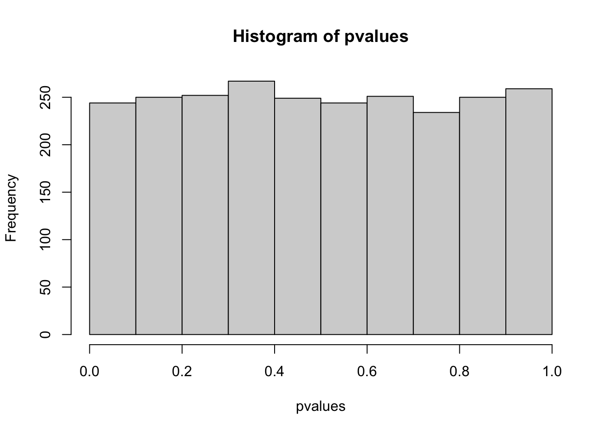
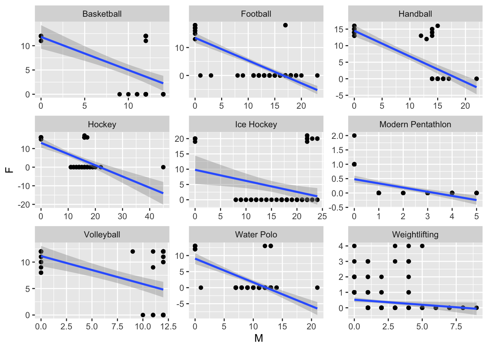
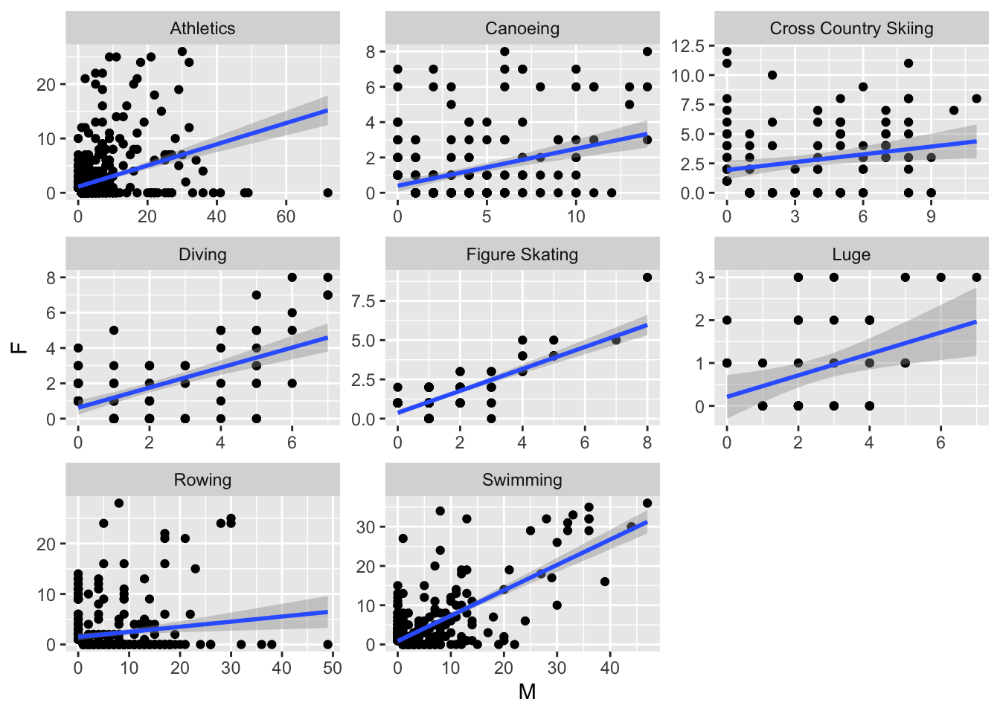

6 Hypothesis testing
A large number of scientific questions can be expressed as an hypothesis test—essentially a yes/no question, such as “are two samples drawn from distributions with the same mean?”, or “Is the frequency of an allele in a population greater than 0.1?”. Several tests have been developed, each with a specific type of question in mind. There is a dangerous tendency to view statistics as a collection of tests, and to practice it by plugging in your data set into the correct test, expecting that the test will spit out the correct decision. The purpose of this lesson is to demonstrate that using and interpreting statistical tests requires careful thinking to avoid serious errors.
6.1 Test results vs. the truth
A statistical test begins by stating the null hypothesis, usually one that is expected, or that shows no effect: for example, that two samples come from a distribution with the same mean, or that a rare allele has frequency of less than 0.1. One may state the alternative hypothesis explicitly, although it’s usually the logical converse of the null, i.e., the two samples have different population means, or the allele has frequency greater than 0.1.
After the hypothesis is stated, the data are collected and are used to test the hypothesis. By default, the null hypothesis is assumed to be true, and the test assesses whether the data provide sufficient evidence against the null hypothesis—in which case the null hypothesis is rejected. There is an adversarial relationship: either the data knock off the hypothesis, or else they fail to do so. Standard terminology reflects this somewhat counter-intuitive setup: rejecting the null hypothesis is called a positive test result, while not rejecting it is called a negative result.

The fundamental assumption of this process is that the truth value of the hypothesis is set prior to the collection of data. For example, if one could observe all of the genomes, the frequency of the allele would be known exactly, so this truth exists prior to the hypothesis testing. Because we typically can only observe a sample (and not the entire universe of data), we might end up erroneously rejecting the null hypothesis when it is in fact true, or not rejecting it when it is in fact false. The possible outcomes of a test can be organized in the table:
| H0 | True | False |
|---|---|---|
| Reject | False Positive | True Positive |
| Not Reject | True Negative | False Negative |
The values at the top describe the truth status of the hypothesis, while the decisions in the left column are the result of using data to test the hypothesis. Note: the words false and true in describing the test result do not refer to the hypothesis, but to whether the result is correct! For example, if the frequency of the allele were 0.09 but the test for the hypothesis that the frequency is less than 0.1 resulted in rejecting that hypothesis, that would be a false positive result (the null hypothesis is true but the test rejected it.)
6.2 Types of errors
As mentioned above, sometimes a hypothesis test makes the wrong decision, which is called an error. There are two different kinds of errors: rejecting a true null hypothesis, called a Type I error, and not rejecting a false null hypothesis, called a Type II error.
Example: In the case above of testing for the same mean: if the samples are taken from distributions with the same mean, but the hypothesis is rejected, this is called a false positive (Type I error). If the samples come from distributions with different means, but the hypothesis is not rejected, this is called a false negative (Type II error.)
As a scientist, would you rather make a Type I error (make an erroneous discovery), or a Type II error (fail to make a discovery)?
6.3 Test parameters and p-values
The sensitivity of a test is the probability of obtaining the positive result, given a false hypothesis; and the specificity of a test is the probability of obtaining the negative result, given a true hypothesis. The Type I error rate is the probability of obtaining the positive result, given a true hypothesis (complementary to specificity), and the Type II error rate is the probability of obtaining the negative result, given a false hypothesis (complementary to sensitivity).
All four parameters (rates) of a binary test are summarized as follows: \[\text{Sen} = \frac{TP}{TP+FN}; \; \text{Spec} = \frac{TN}{TN+FP}\] \[\text{FPR} = \frac{FP}{TN+FP}; \; \text{FNR} = \frac{FN}{TP+FN}\] The notation TP, FP, etc. represents the frequency or count of true positives, false positives, etc., out of a large number of experiments with known truth status of the hypothesis.
Knowledge of sensitivity and specificity determine the Type I and Type II error rates of a test since they are complementary events.
Of course, it is desirable for a test to be both very sensitive (reject false null hypotheses, detect disease, convict guilty defendants) and very specific (not reject true null hypotheses, correctly identify healthy patients, acquit innocent defendants), but no test is perfect, and sometimes it makes the wrong decision. This is where statistical inference comes into play: given some information about these parameters, a statistician can calculate the error rate in making different decisions.
The probability that a given data set is produced from the model of the null hypothesis is called the p-value of a test. More precisely:
For a given data set \(D\) and a null hypothesis \(H_0\), the p-value is the probability of obtaining a result as far from expectation or farther than the observed data, given the null hypothesis.
The p-value is the most used, misused, and even abused quantity in statistics, so please think carefully about its definition. One reason this notion is frequently misused is because it is very tempting to conclude that the p-value is the probability of the null hypothesis being true, based on the data. That is not the case! The definition has the opposite direction of conditionality—we assume that the null hypothesis is true, and based on that calculate the probability of obtaining a pattern as extreme or more extreme than what observed in the data. There is no way (according to classical “frequentist” statistics) of assigning a probability to the truth of a hypothesis, because it is not the result of an experiment.
Typically, one sets a critical threshold bounding the probability of making a Type I error in a test to a “small” number (often, \(\alpha = 0.05\) or \(0.01\)), and calls the result of a test “significant” if the p-value is less than \(\alpha\).

For example, consider samples of size \(n\) taken from two normal distributions (with unobserved means \(\mu_1\), \(\mu_2\)). We can generate the data:
generate_samples <- function(n, mu1, mu2){
return(data.frame(sample1 = rnorm(n = n, mean = mu1, sd = 1),
sample2 = rnorm(n = n, mean = mu2, sd = 1)))
}
my_sample <- generate_samples(1000, 1, 1.01)and use a Student’s t-test to probe whether the means differ:
# two-tailed (diff in means = 0)
# Student's (assumes equal variances)
# (for Welch's t-test, var.equal = FALSE)
t.test(my_sample$sample1,
my_sample$sample2,
var.equal = TRUE)
Two Sample t-test
data: my_sample$sample1 and my_sample$sample2
t = -0.097098, df = 1998, p-value = 0.9227
alternative hypothesis: true difference in means is not equal to 0
95 percent confidence interval:
-0.09374748 0.08490237
sample estimates:
mean of x mean of y
0.9880106 0.9924331 Exercise: Can you detect a “significant difference in means” (assuming \(\alpha = 0.05\))? What if you take a much larger sample? What if the difference in means is more pronounced?
6.4 Multiple comparisons
What if we were to produce several samples? E.g., measure difference between males and females reflectance in birds at several locations? Suppose that in fact the reflectance is the same for male and female (\(\mu_1 = \mu_2 = 1\)), that for each location we capture and measure 10 males and 10 females, and that we repeat this across 2500 locations.
First, let’s write a little function that returns the p-values for the t-test
get_p_value_t_test <- function(my_sample){
test_results <- t.test(my_sample$sample1,
my_sample$sample2,
var.equal = TRUE)
return(test_results$p.value)
}and now simulate the data:
pvalues <- replicate(n = 2500,
expr = get_p_value_t_test(generate_samples(10, 1, 1)))How many times do we detect a “significant difference in reflectance” when setting \(\alpha = 0.05\) (even though we know that males and females are sampled from the same distribution)?
sum(pvalues < 0.05)[1] 114You should get a number of “significant” tests that is about \(2500 \cdot 0.05 = 125\). In fact, the distribution of p-values when the data are sampled from the null hypothesis is approximately uniform:
hist(pvalues)
This means that when you are performing multiple tests, some will turn out to find “significant” differences even when there are none. Again, this is better summarized by xkcd:

Exercise: what happens to the distribution of p-values if the means are quite different (e.g., \(\mu_1 = 1\), \(\mu_2 = 0.9\))?
6.5 Corrections for multiple comparisons
The main approach to deal with the problem of multiple comparisons is to adjust the p-values. For example, in Bonferroni correction one consider as significant test results whose associated p-value is \(\leq \alpha / n\), where \(n\) is the number of tests performed (equivalently, redefine the p-values as \(p' = \min(p n, 1)\). Clearly, this correction becomes overly conservative when the number of tests is large. For example, in biology:
Gene expression In a typical microarray experiment, we contrast the differential expression of tens of thousands of genes in treatment and control tissues.
GWAS In Genomewide Association Studies we want to find SNPs associated with a given phenotype. It is common to test tens of thousands or even millions of SNPs for significant associations.
Identifying binding sites Identifying candidate binding sites for a transcriptional regulator requires scanning the whole genome, yielding tens of millions of tests.
The funniest example of this problem is the fMRI of the dead salmon: a dead salmon “was shown a series of photographs depicting human individuals in social situations with a specified emotional valence. The salmon was asked to determine what emotion the individual in the photo must have been experiencing.” The researchers showed that if multiple comparisons were not accounted for, one would detect a cluster of active voxels in the brain, with a cluster-level significance of p = 0.001.
The widespread use of GWAS and other techniques that are trying to find a needle in a haystack led to the development of many interesting techniques. Here an interesting account.
Adjusting p-values in R:
original_pvalues <- c(0.01, 0.07, 0.1, 0.44)
p.adjust(original_pvalues, method = "bonferroni")[1] 0.04 0.28 0.40 1.006.6 Two problems with science
6.6.1 Selective reporting
We have seen above that setting \(\alpha = 0.05\) means that we are going to make false discoveries at this rate. In science, we prefer publishing positive results—negative results are difficult to publish and attract little attention. Suppose that 20 research groups around the world set out to test the same hypothesis, which is false. Then there is a good chance at least one group will reject the null hypothesis, and pursue publication for their “discovery”. The tendency to put negative studies in the files drawer and forget about them causes the so called publication bias (aka selective reporting): by favoring positive results over negative ones, we greatly increase the chance that our conclusions are wrong. Note that these would cause the results of the paper to be largely impossible to reproduce, and the reproducibility crisis in the sciences is partially due to selective reporting.
6.6.2 P-hacking
One big violation of good experimental design is known as p-value “fishing” (or p-hacking): repeating the experiment, or increasing the sample size, until the p-value is below the desired threshold, and then stopping the experiment. Using such defective design dramatically lowers the likelihood that the result is a true positive. And of course there is actual fraud, or fudging of data, which contributes to some bogus results.
An insidious cousin of p-hacking was dubbed by Andrew Gelman “the garden of forking paths” in this paper. The issue arises in complex problems with multi-variable noisy datasets (aren’t all interesting ones like that?) Essentially, with many choices and degrees of freedom in a problem, it is easy to convince yourself that the choice you made (data cleaning, parameter combinations, etc.) is the correct one because it gives the strongest results. Without a clearly stated hypothesis, experimental design, and data processing details prior to data collection, this enchanted garden can lead even a well-intentioned researcher astray.
6.7 Readings
Good readings on these and related issues:
6.8 How to fool yourself with p-hacking (and possibly get fired!)
We are going to try our hand at p-hacking, to show how easy it is to get fooled when you have a sufficiently large and complex data set. The file data/medals.csv contains the total number of medals won at the Olympic games (Summer or Winter) by country, sport and gender. We have a simple, and reasonable (?) hypothesis: because the amount of money available to Olympic teams is finite, whenever a country invests in the male team, this will be at the detriment of the female team. To test this hypothesis, we measure whether the number of medals won by a national female team in a year is negatively correlated with the number of medals won by the male team.
Let’s read the data, and take a peak:
library(tidyverse)── Attaching core tidyverse packages ──────────────────────── tidyverse 2.0.0 ──
✔ dplyr 1.1.2 ✔ readr 2.1.4
✔ forcats 1.0.0 ✔ stringr 1.5.0
✔ ggplot2 3.4.3 ✔ tibble 3.2.1
✔ lubridate 1.9.2 ✔ tidyr 1.3.0
✔ purrr 1.0.2
── Conflicts ────────────────────────────────────────── tidyverse_conflicts() ──
✖ dplyr::filter() masks stats::filter()
✖ dplyr::lag() masks stats::lag()
ℹ Use the conflicted package (<http://conflicted.r-lib.org/>) to force all conflicts to become errorsdt <- read_csv("data/medals.csv")Rows: 6915 Columns: 5
── Column specification ────────────────────────────────────────────────────────
Delimiter: ","
chr (2): NOC, Sport
dbl (3): Year, F, M
ℹ Use `spec()` to retrieve the full column specification for this data.
ℹ Specify the column types or set `show_col_types = FALSE` to quiet this message.dt# A tibble: 6,915 × 5
NOC Year Sport F M
<chr> <dbl> <chr> <dbl> <dbl>
1 AFG 2008 Taekwondo 0 1
2 AFG 2012 Taekwondo 0 1
3 AHO 1988 Sailing 0 1
4 ALG 1984 Boxing 0 2
5 ALG 1992 Athletics 1 0
6 ALG 1992 Boxing 0 1
7 ALG 1996 Athletics 0 1
8 ALG 1996 Boxing 0 2
9 ALG 2000 Athletics 1 3
10 ALG 2000 Boxing 0 1
# ℹ 6,905 more rowsFirst, let’s see whether our hypothesis works for the whole data:
cor(dt$F, dt$M)[1] 0.1651691The correlation is positive: more medals for the men tend to correspond to more medals for the women. This correlation is not very strong, but is it “significant”? We can run a correlation test:
cor.test(dt$F, dt$M)
Pearson's product-moment correlation
data: dt$F and dt$M
t = 13.924, df = 6913, p-value < 2.2e-16
alternative hypothesis: true correlation is not equal to 0
95 percent confidence interval:
0.1421521 0.1880075
sample estimates:
cor
0.1651691 Indeed! The confidence intervals are far from 0: the correlation is definitely positive. Should we give up? Of course not! Just as for the jelly beans, we can p-hack our way to glory by subsetting the data. We are going to test each discipline independently, and see whether we can get a robustly negative correlation for any discipline. Because we are serious scientists, we are going to consider only disciplines for which we have at least 50 data points, to avoid results that are due to small sample sizes. Let’s write a code:
dt <- dt %>% group_by(Sport) %>% mutate(sample_size = n()) %>% ungroup()
correlations <- dt %>%
filter(sample_size >= 50) %>%
group_by(Sport) %>%
summarise(cor = cor(`M`, `F`),
pvalue = cor.test(`M`, `F`)$p.value) %>%
ungroup() Now let’s see whether there are highly significant negative correlations:
my_results <- correlations %>% filter(pvalue < 0.05, cor < 0)
my_results# A tibble: 9 × 3
Sport cor pvalue
<chr> <dbl> <dbl>
1 Basketball -0.579 7.86e- 8
2 Football -0.796 6.75e-23
3 Handball -0.810 5.28e-16
4 Hockey -0.585 4.16e- 9
5 Ice Hockey -0.302 8.10e- 3
6 Modern Pentathlon -0.561 3.57e- 8
7 Volleyball -0.545 2.18e- 6
8 Water Polo -0.688 3.41e-14
9 Weightlifting -0.138 2.33e- 2Let’s plot our results to convince ourselves that they are strong:
ggplot(dt %>% inner_join(my_results)) +
aes(x = `M`, y = `F`) +
geom_point() +
geom_smooth(method = "lm") +
facet_wrap(~Sport, scales = "free")
That’s it! Should we rush to publish our results? Not quite: we have p-hacked our way to some highly significant results, but we did not correct for the number of tests we’ve made, and what we would do is to selectively reporting our strong results. In fact, we can do something very simple to convince ourselves that our results do not make much sense: just run the code again, but reporting significant positive correlations…
my_results <- correlations %>% filter(pvalue < 0.05, cor > 0)
ggplot(dt %>% inner_join(my_results)) +
aes(x = `M`, y = `F`) +
geom_point() +
geom_smooth(method = "lm") +
facet_wrap(~Sport, scales = "free")
You can see that we’ve got about the same number of sports testing significant for positive correlation! Bonus question what about figure skating?